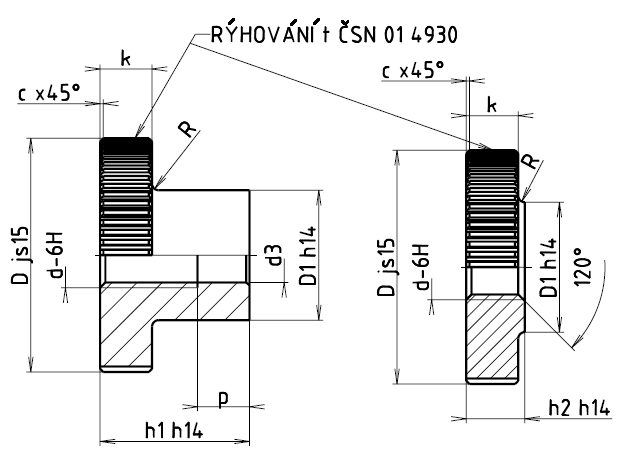

Příklad označení rýhované matice se závitem M10:
RÝHOVANÁ MATICE M10 ČSN 02 1461.21
Příklad označení nízké rýhované matice se závitem M10:
RÝHOVANÁ MATICE M10 ČSN 02 1462.21
| Závit d | M1 | M1,2 | M1,6 | M2 | M2,5 | M3 | M4 | M5 | M6 | M8 | M10 |
|---|---|---|---|---|---|---|---|---|---|---|---|
| c | 0,2 | 0,2 | 0,2 | 0,2 | 0,3 | 0,4 | 0,4 | 0,5 | 0,6 | 0,6 | 0,8 |
| R | 0,5 | 0,5 | 0,5 | 0,5 | 0,5 | 0,5 | 0,5 | 1 | 1 | 2 | 2 |
| t | 0,5 | 0,5 | 0,5 | 0,6 | 0,6 | 0,6 | 0,6 | 0,6 | 0,6 | 0,8 | 0,8 |
| D | 5,5 | 6 | 7,5 | 9 | 10 | 12 | 16 | 20 | 24 | 30 | 36 |
| D1 | 2,8 | 3 | 3,8 | 4,5 | 5 | 6 | 8 | 10 | 12 | 16 | 20 |
| k | 1,5 | 1,5 | 2 | 2 | 2,5 | 2,5 | 3,5 | 4 | 5 | 6 | 8 |
| h1 | 3,5 | 4 | 5 | 5 | 6 | 7 | 9 | 11 | 14 | 16 | 20 |
| h2 | 2 | 2 | 2,5 | 2,5 | 3 | 3 | 4 | 5 | 6 | 8 | 10 |
| p | 2 | 2 | 2,5 | 2,5 | 2,6 | 3 | 3,5 | 4,5 | 5,5 | 5,5 | 7 |
| d3 | 1,2 | 1,4 | 2 | 2,5 | 3 | 3,5 | 4,6 | 5,6 | 6,8 | 8,8 | 11 |
| Hmotnost [g] | 0,3 | 0,4 | 0,9 | 1,2 | 1,8 | 2,7 | 6,7 | 12,2 | 22,2 | 42,2 | 80 |